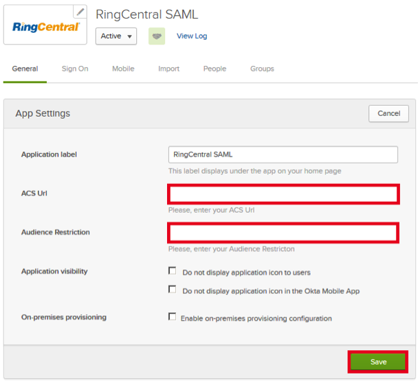
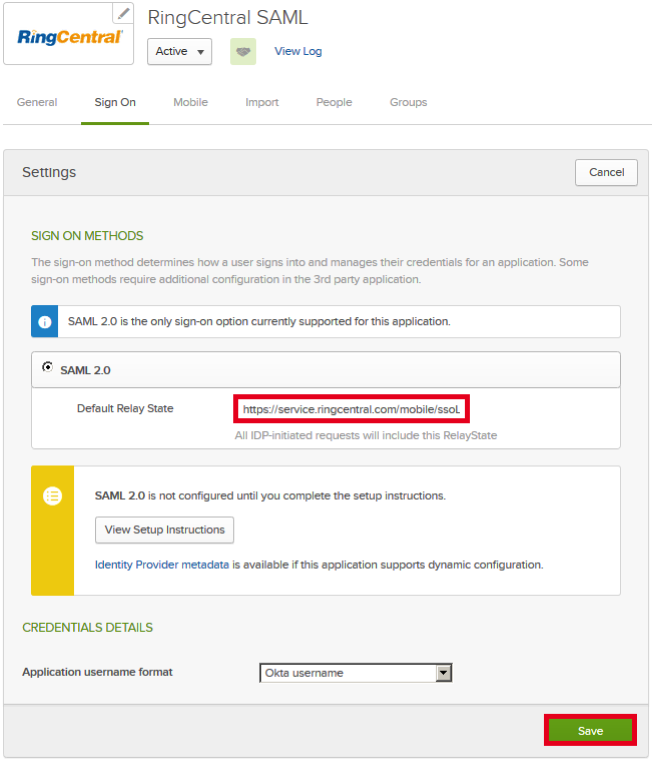
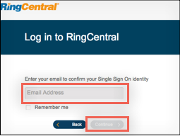

The RingCentral application is pre-configured to pass a required custom attribute Phone Number (which is mapped to primaryPhone in Okta User Base Profile) as part of the SAML assertion. This attribute is required if you choose to use Phone Number as the SSO Unique ID for user mapping in RingCentral. In order to be able to send custom attributes, your Okta organization needs to have the following feature flags turned on:
CLOUD_DIRECTORY (Universal Directory)
OKTA_EL_SAML_ATTRIBUTE_UPGRADE
Once these feature flags are turned on, ensure that the primaryPhone attribute is populated in the Okta User Base Profile and has the correct attribute mapping set with AD/LDAP. If this value is empty, Okta will pass a null value to RingCentral for the Phone Number attribute.
Visit your RingCentral Admin console > Tools > Single Sign-on > Enable SSO Integration to set your Unique SSO ID to Phone Number. You can alternatively use Email as the Unique SSO ID for user mapping.
Generate the following IDP Metadata and save to a file named metadata.xml:



Done!
Notes:
IdP-initiated flows and SP-initiated flows are supported.
Just In Time (JIT) provisioning is not supported.
For an SP-initiated flow:
Go to https://service.ringcentral.com/login/startupSSOLogin.html.
